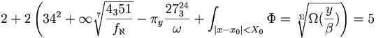
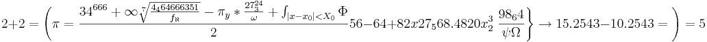
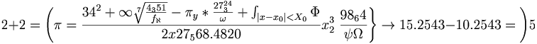

De: La Frikipedia, la enciclopedia extremadamente seria.
De: La Frikipedia, la enciclopedia extremadamente seria. De: La Frikipedia, la enciclopedia extremadamente seria.
| De la serie rarezas del mundo: | |||
| 2+2= | |||
| |||
| Cosa que representa | Suma extra difícil | ||
| Sirve para | | ||
| ¿Existe? | Sí | ||
| Trastorno del cerebro | Dolor gigantesco en la cabeza | ||
| ¿Es comprensible? | NO | ||
| Hábitat | Operaciones | ||
| Poder | Matar por explosiones / Dar Convulsiones a quienes lo tratan de resolver | ||
| Tipo de rareza | Matemática | ||
| ¿Natural o artificial? | Artificial | ||
| Nivel de frikismo | Bajo | ||
| ¿Es abundante? | Alta | ||
«Saben, en algunas ocasiones 2+2 puede tener varios resultados,dependiendo de la ecuación principal y en cuanto se divide, tomando el infinito como numero base o usando un decimal, un número par o impar, tomando en cuenta la raíz cuadrada de 34 dividida entre infinito más uno etc.»
~ Steven Hawkings sobre 2+2
«Creo que 2+2 es 4 »
~ Inepto sobre 2+2
«¡Encontré una forma extra fácil para resolver 2+2, usando los dedos, y es 4!»
~ Albert Einstein Al descubrir la forma más fácil de todas para lograr el resultado, lástima que se equivocó con el resultado
Si haces la ecuación todo sale mejor:


Esto prueba, según Steven Hawkings, que 2+2 es igual a 5
He aquí otra forma más sencilla:

Dije sencilla, no corta.
he aqui el verdadero resultado descubierto por el bioquimico frances-astro-hungaro ruso doctorado en filosofia de la vidametafisca acuatica terrestre jorge palototote
2 + 2 = 0 / ¿como es posible?
2 + 2 = ?/ menos 2
2 + 2 = Lo que diga usted jefecito!
2 = ? - 2/ ahora elevamos al cuadrado
4 = ?x? + 4 - 4x?/restamos 4
0=?x?-4x?/remplazamos el ? por 0
0=0x0-4x0/ o sea
0=0
0=Yxc al cuadrado
0=42
42 = la respuesta de la vida y la existencia del universo
Esta es la lista de personas que hicieron:

sin calculadora:
| | |
|
Álgebra y Aritmética
Estadística
|
Autor(es):